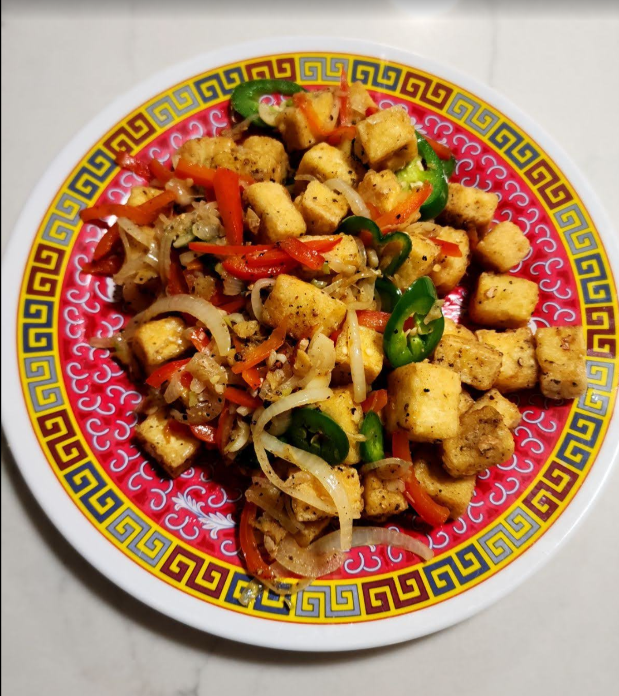

Salt and Pepper Tofu

Ingredients
- 16 oz firm tofu, drained and cubed
- 3 stalks green onion (white part only), diced
- 2 oz mini bell pepper, diced
- 2 clove garlic, minced
- 4 C boiling water
- 1 tsp salt
- 1 tsp garlic salt
- ¼ tsp white pepper
- ½ egg
- 6 tbs cornstarch
- 16 oz oil (for deep-frying)
- 2 tbs oil (for stir-frying; can re-use oil from deep-fry step)
Directions
- Add cubed tofu to salted boiling water and cook for 3 minutes with the lid on, and then lower the heat to low and uncover the pot. Cook for another 2 minutes. Remove from heat and drain in a colander
- Allow tofu to cool and dry thoroughly with paper towels
- Transfer the tofu into a bowl, add the beaten egg, and mix to evenly coat the tofu.
- Remove to a pan with cornstarch and cover the tofu cubes completely and evenly
- Mix garlic salt and white pepper (¼ tsp) in a separate bowl. This will be added to the stir-fry at the very end.
- Prepare a batch of dredged tofu in a spider strainer. If you're not used to deep-frying several items at once and are worried about them sticking together, cook in smaller batches.
- Heat oil to 400°F (or 200°C) and add the tofu. At the beginning, let the tofu cook undisturbed so that the crust can set. If you jostle them too soon, the batter will fall off and the tofu won't be crusty. Fry in batches to prevent the oil from cooling
- After about 5 minutes, remove the tofu to a wire rack
- Heat 2 tbs of oil in a wok on high. Before the oil starts to shimmer or smoke, add the dried chili and fry just to extract the flavor (~8 seconds), and then remove.
- Fry the minced garlic for 15 seconds, stirring constantly, then add the diced bell peppers and green onion whites and fry for 20-25 seconds
- Add the fried tofu and stir-fry for 10 seconds, then season with the garlic pepper seasoning mix until the tofu cubes are evenly coated
Chef's Notes
- A vegetarian recipe as written - using a plant-based alternative to the egg will make it vegan
Michael Fritsche
mbf@fritsche.org